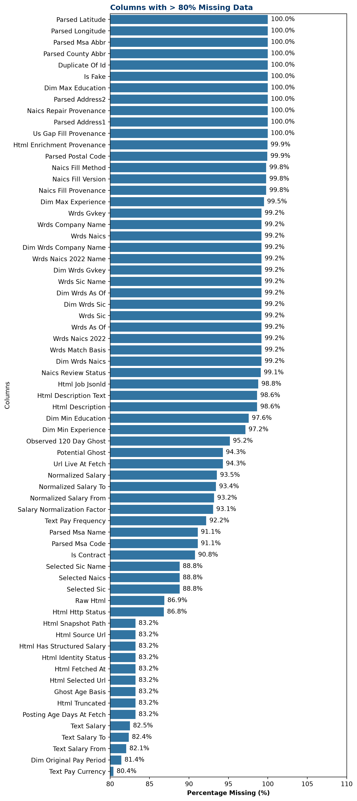
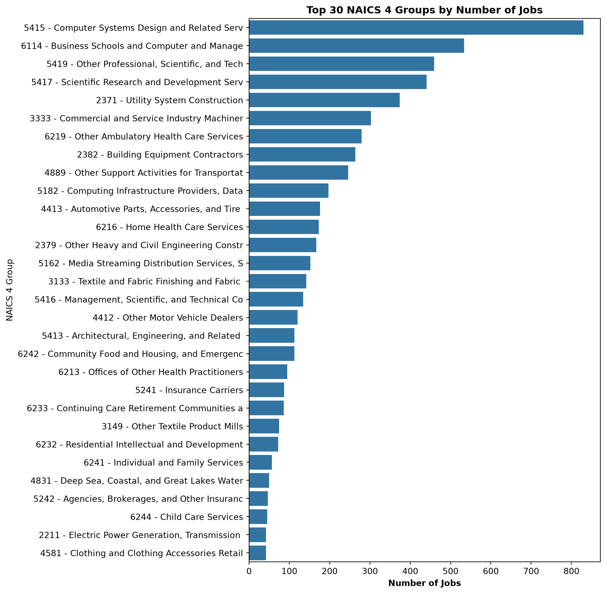
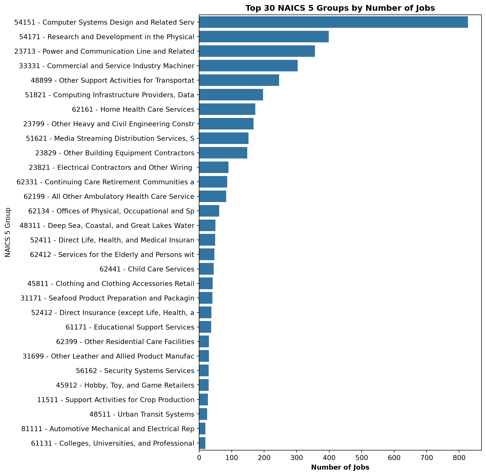

In this notebook, we explore the dataset of ~800k job postings from 2026.
import pandas as pdimport matplotlib.pyplot as pltimport seaborn as snsfrom pyspark.sql import SparkSession# Initialize Spark Sessionspark = SparkSession.builder \ .appName("JobDataExploration") \ .master("local[*]") \ .getOrCreate()# Load a sample parquet file # (using a single file to avoid globbing issues on Windows without winutils)df_spark = spark.read.parquet("E:/Data/Jobs_2026_US/jobs_2026_part_00001.parquet")posting_sample = df_spark.select("ID", "POSTED", "COMPANY_NAME", "TITLE_RAW", "CITY", "STATE")# postings_sample.show(5, truncate=False)postings_df = posting_sample.toPandas()# hide index column in the outputpostings_df.head()
ID
POSTED
COMPANY_NAME
TITLE_RAW
CITY
STATE
0
1
2026-01-02
Databricks
Staff Data Engineer
CA
1
2
2026-01-03
Amazon
Software Development Engineer, ML Systems, Ann...
NY
2
3
2026-01-03
Waymo
Technical Program Manager, Release
3
4
2026-01-04
Amazon
Engineering Operations Technician
MS
4
5
2026-01-05
Amazon
SDE, MLA hardware/software co-design, Annapurn...
TX
Missing Data Analysis
We will calculate the percentage of missing values across all columns in our dataset to identify which columns are more than 80% empty. We then visualize these in an NA plot and save the result.
import osimport pyspark.sql.functions as F# Get total number of rows in the Spark DataFrametotal_rows = df_spark.count()# Calculate null counts for all columns in the Spark DataFramenull_counts_exprs = [ F.sum(F.when(F.col(c).isNull(), 1).otherwise(0)).alias(c) for c in df_spark.columns]null_counts_row = df_spark.select(null_counts_exprs).collect()[0]# Convert the results to a Pandas Series containing percentagesnull_percentages = pd.Series(null_counts_row.asDict()) / total_rows *100# Filter for columns that are more than 80% emptymostly_empty_cols = null_percentages[null_percentages >80].sort_values(ascending=False)# print(f"Columns with > 80% missing data:\n{mostly_empty_cols}")# Ensure the outputs directory existsos.makedirs("outputs", exist_ok=True)ifnot mostly_empty_cols.empty: plt.figure(figsize=(8, 18))# Clean up y-labels: replace underscores with spaces and title case formatted_labels = [str(col).replace("_", " ").title() for col in mostly_empty_cols.index]# Plot using Seaborn ax = sns.barplot( x=mostly_empty_cols.values, y=formatted_labels )# Add % label to each bar ax.bar_label(ax.containers[0], fmt='%.1f%%', padding=5)# Style the title: left-aligned, bold, and dark blue plt.title("Columns with > 80% Missing Data", loc='left', fontweight='bold', color='#003366')# Style the x-axis label: bold plt.xlabel("Percentage Missing (%)", fontweight='bold') plt.ylabel("Columns") plt.xlim(80, 110) # Extend x-axis to 110% to leave space for labels plt.tight_layout()# Save the plot plot_path = os.path.join("outputs", "mostly_empty_columns_plot.png") plt.savefig(plot_path)print(f"\nPlot saved successfully to: {plot_path}") plt.show()else:print("\nNo columns have more than 80% missing data.")
Plot saved successfully to: outputs\mostly_empty_columns_plot.png

NAICS Groups Analysis
We will determine the number of distinct NAICS 4 and NAICS 5 groups (ignoring nulls) and plot the number of jobs in the top groups.
# Calculate counts for NAICS 4naics4_df = df_spark.filter(F.col("NAICS4").isNotNull()) \ .groupBy("NAICS4", "NAICS4_NAME") \ .count() \ .orderBy(F.desc("count")) \ .toPandas()# Calculate counts for NAICS 5naics5_df = df_spark.filter(F.col("NAICS5").isNotNull()) \ .groupBy("NAICS5", "NAICS5_NAME") \ .count() \ .orderBy(F.desc("count")) \ .toPandas()print(f"Total number of non-null NAICS 4 groups: {len(naics4_df)}")print(f"Total number of non-null NAICS 5 groups: {len(naics5_df)}")# Create labels combining code and name for better readabilitynaics4_df['Label'] = naics4_df['NAICS4'].astype(str) +" - "+ naics4_df['NAICS4_NAME'].astype(str).str[:40]naics5_df['Label'] = naics5_df['NAICS5'].astype(str) +" - "+ naics5_df['NAICS5_NAME'].astype(str).str[:40]# Plot NAICS 4 Jobs (Top 30 for readability)plt.figure(figsize=(10, 10))ax1 = sns.barplot(x='count', y='Label', data=naics4_df.head(30))plt.title("Top 30 NAICS 4 Groups by Number of Jobs", fontweight='bold')plt.xlabel("Number of Jobs", fontweight='bold')plt.ylabel("NAICS 4 Group")plt.tight_layout()naics4_plot_path = os.path.join("outputs", "naics4_jobs_plot.png")plt.savefig(naics4_plot_path)print(f"\nPlot saved successfully to: {naics4_plot_path}")plt.show()# Plot NAICS 5 Jobs (Top 30 for readability)plt.figure(figsize=(10, 10))ax2 = sns.barplot(x='count', y='Label', data=naics5_df.head(30))plt.title("Top 30 NAICS 5 Groups by Number of Jobs", fontweight='bold')plt.xlabel("Number of Jobs", fontweight='bold')plt.ylabel("NAICS 5 Group")plt.tight_layout()naics5_plot_path = os.path.join("outputs", "naics5_jobs_plot.png")plt.savefig(naics5_plot_path)print(f"\nPlot saved successfully to: {naics5_plot_path}")plt.show()
Total number of non-null NAICS 4 groups: 124
Total number of non-null NAICS 5 groups: 90
Plot saved successfully to: outputs\naics4_jobs_plot.png

Plot saved successfully to: outputs\naics5_jobs_plot.png

NAICS 5 Distribution within NAICS 4 Groups
To better understand the hierarchical structure, we will plot the 5-digit NAICS codes under each of the top 10 4-digit NAICS codes as a grouped bar chart.
# Find the top 10 NAICS 4 codes by job counttop_10_naics4_codes = naics4_df.head(10)['NAICS4'].tolist()# Filter data for top 10 NAICS 4 groups and group by NAICS 4 and 5naics4_5_grouped_df = df_spark.filter( F.col("NAICS4").isin(top_10_naics4_codes) & F.col("NAICS5").isNotNull()).groupBy("NAICS4", "NAICS5", "NAICS5_NAME").count().toPandas()# Sort the values so the grouped bars appear in order of countnaics4_5_grouped_df = naics4_5_grouped_df.sort_values(by=["NAICS4", "count"], ascending=[True, False])# Create labels combining code and name for NAICS 5naics4_5_grouped_df['NAICS5_Label'] = naics4_5_grouped_df['NAICS5'].astype(str) +" - "+ naics4_5_grouped_df['NAICS5_NAME'].astype(str).str[:30]# Plot the grouped bar chartplt.figure(figsize=(8, 6))sns.barplot( data=naics4_5_grouped_df, x="NAICS4", y="count", hue="NAICS5_Label", palette="tab20")plt.title("Jobs by 5-Digit NAICS Codes under Top 10 4-Digit NAICS Codes", fontweight='bold')plt.xlabel("4-Digit NAICS Code", fontweight='bold')plt.ylabel("Number of Jobs", fontweight='bold')# Move the legend below the x-axis in 2 columns with 7pt fontplt.legend( title="5-Digit NAICS Group", bbox_to_anchor=(0.5, -0.15), loc='upper center', borderaxespad=0., fontsize=7, title_fontsize=8, ncol=3)plt.tight_layout()# Save the plotgrouped_plot_path = os.path.join("outputs", "naics_4_5_grouped_jobs_plot.png")plt.savefig(grouped_plot_path)print(f"\nGrouped bar chart saved successfully to: {grouped_plot_path}")plt.show()
Grouped bar chart saved successfully to: outputs\naics_4_5_grouped_jobs_plot.png